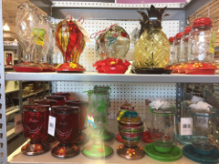

"off-price retailer"
more like,
on-point selection.
"closeout merchandise"
more like,
close to my heart.
^^ "This is the lamps department."
a light in the darkness,
a warm glow to temper
the torments of Monday Evening.
Lenox, Denby Pottery, KitchenAid,
Cuisinart, Steinbach, Wedgwood,
Reed and Barton, Breville,
even Madame Alexander,
Peacock Alley, Royal Doulton...
tell me straight Tuesday Morning:
are these, can they be,
"among others"?
But, I must confess,
my words are heavy with heavy heart;
for, how can we maintain?
You whisper,
"standardized, centrally driven,
multi-channel, low expense,"
but I know you don't mean these things.
The things people are saying about you:
"Women's toilet completely blocked
by someone's feces."
or
"...none of the staff
seems to be in any hurry"
what am I to think?
Sometimes,
people "almost said something"
but at the last minute,
decided it wasn't worth it."
and I can relate.

But then,
you go and do something like this,
and like a hummingbird to nectar
I pine for next week
and Tuesday Morning with you.